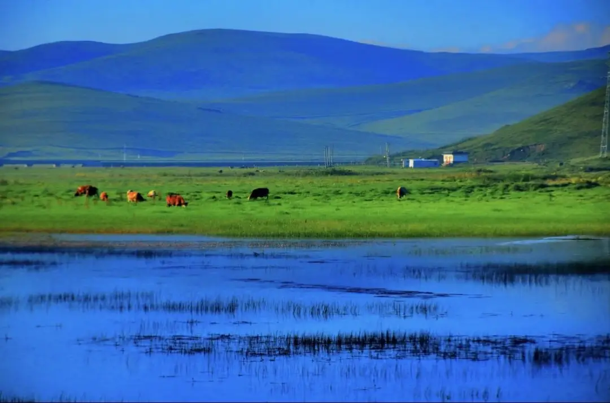
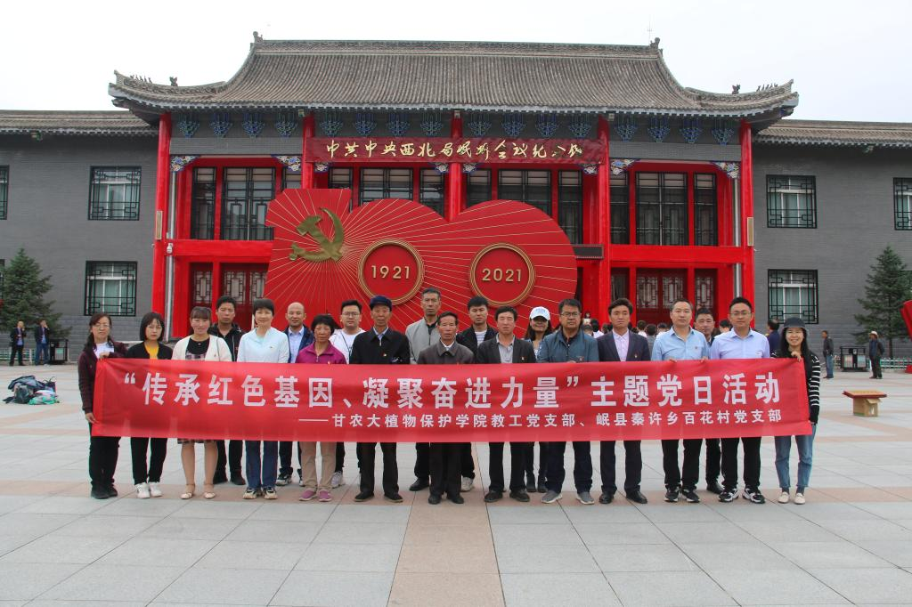
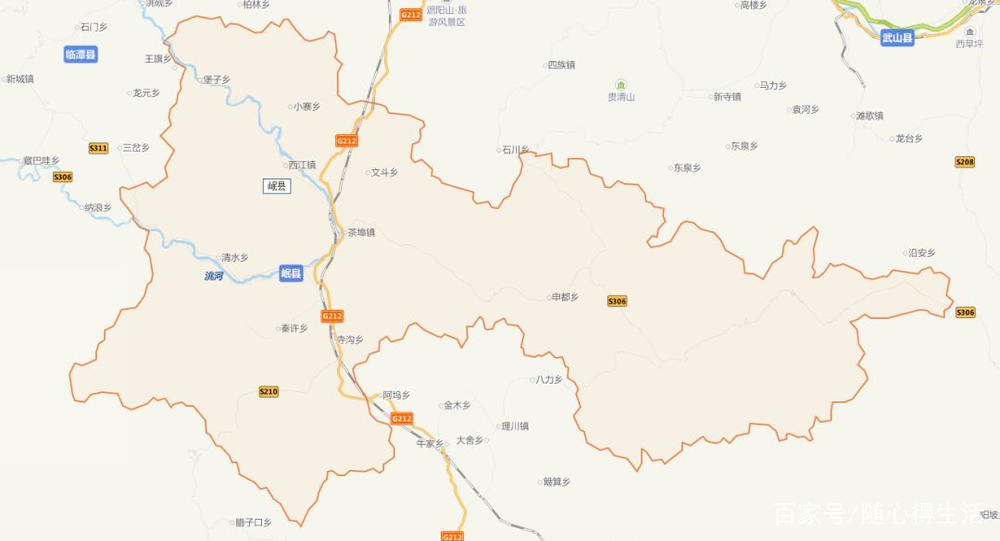

智能信息查询
输入城市或地区名，一键获取美食与天气信息
美食推荐
今日天气预报
酒店查询
特色景点

自然风光
狼渡滩湿地草原
位于岷县西南部，是甘肃省重要的湿地保护区。这里水草丰美，野花遍地，是观赏草原风光、体验牧民生活的理想之地。
生态观光
双燕生态景区
景区内有大片的中药材种植基地，是集观光、科普、休闲于一体的生态旅游区。春季可观赏漫山遍野的当归花海，秋季可体验药材采收。
红色旅游
岷州会议会址
这里是1935年红军长征经过岷县时召开重要会议的历史见证地，现已改建为革命纪念馆，陈列着大量珍贵的历史文物和图片资料。
精品线路
红色文化寻访之旅
2天1晚

第一天
- 上午：参观岷州会议会址
- 下午：游览三十里铺红军长征纪念馆
- 晚上：品尝岷县特色美食
第二天
- 上午：参观红军长征纪念碑
- 下午：体验当地民俗文化
药乡风情体验之旅
3天2晚

第一天
- 上午：参观当归博物馆
- 下午：游览中药材种植基地
第二天
- 全天：狼渡滩湿地草原游览
第三天
- 上午：参观药材交易市场
- 下午：体验中药材加工工艺
旅游资讯
交通指南
自驾路线：兰州-岷县（约2小时）
公共交通：兰州汽车站有直达岷县的班车
公共交通：兰州火车站有直达岷县的列车
最近机场：兰州中川国际机场（约200公里）
住宿推荐
城区酒店：岷州大酒店、洮岷国际大酒店、金当归酒店
特色住宿：狼渡滩草原牧家乐
价格区间：100-300元/晚
最佳游玩时间
春季（4-5月）：赏当归花海
夏季（7-8月）：草原避暑
秋季（9-10月）：药材采收季
冬季（11-2月）：体验冰雪城堡
四季特色活动
春季
春日赏花季
- 当归花海观赏（4月中旬-5月）
- 春季药材种植体验
- 踏青采摘活动
- 农耕文化体验
夏季
避暑休闲季
- 草原露营节（7月-8月）
- 民族歌舞表演
- 草原骑马体验
- 农家美食品鉴
秋季
金秋采收季
- 中药材采收节（9月-10月）
- 农产品展销会
- 药膳文化节
- 摄影采风活动
冬季
冰雪欢乐季
- 冰雪城堡游览（12月-次年2月）
- 温泉养生之旅
- 冬季民俗活动
- 年货采购节
特色美食推荐
游客服务
🏥
医疗救助
紧急救援电话：120
最近医院：岷县人民医院
🚔
安全保障
报警电话：110
旅游警察：13830247311
ℹ️
咨询服务
旅游咨询：13830247311
投诉电话：13830247311
🚌
交通服务
出租车电话：13830247311
公交查询：13830247311